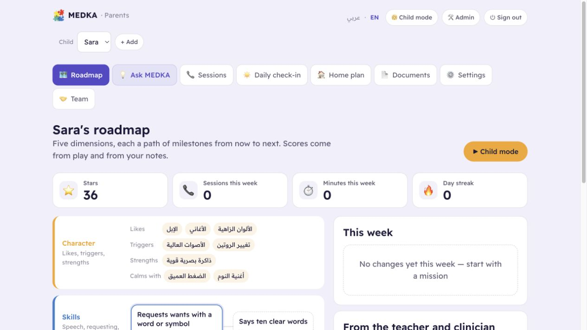

خارطة نمو واحدة لفريق رعاية الطفل
يجمع مدكا نتائج اللعب ومتابعة الأسرة وملاحظات الصف وأهداف الأخصائي في خارطة مشتركة توضّح ما حقّقه الطفل وما يتدرّب عليه.
نظرة على خارطة النمو
تعرض لوحة ولي الأمر عدد النجوم والجلسات والدقائق وأيام المواظبة. وتظهر تحتها مراحل النمو بحسب المجال، مع توضيح المرحلة المحقّقة والحالية والتالية. وتعرض اللوحة أيضًا آخر التغييرات وملاحظات المعلّمين والأخصائيين.
الدرجات في المثال توضيحية. وتستخدم الخارطة لتوثيق التدريب والملاحظات لفريق الرعاية.


تجمع لوحة ولي الأمر إحصاءات الأنشطة وملف الطفل ومراحله الحالية وملاحظات فريق الرعاية.
مجالات النمو الخمسة
- سمات الطفل
- تساعد اهتمامات الطفل ونقاط قوّته وما يزعجه أو يهدّئه الكبار ورفيق على فهم احتياجاته.
- المهارات
- قد تشمل الأهداف الحالية الطلب بكلمة أو رمز، أو تسمية الأشياء، أو زيادة المفردات التي ينطقها الطفل.
- السلوك
- تركّز الأهداف على تنظيم السلوك والمشاركة، مثل الهدوء مع المساندة أو انتظار الدور.
- المهارات الاجتماعية
- قد تشمل الأهداف الانتباه وتبادل الأدوار وإلقاء التحية والتعرّف على المشاعر.
- التعلّم
- من الأمثلة التعرّف على الألوان والتدرّب على الأرقام ومهارات الانتباه.
ما الذي يوضّح تقدّم الطفل في كل مرحلة؟
اختر مرحلة في تطبيق مدكا للاطّلاع على حالتها والأنشطة أو الملاحظات التي تستند إليها. وقد تشمل هذه المعلومات نتائج التدريب وملاحظات الأسرة والأخصائيين.
يوضّح مدكا أن النظام يرصد التغيّرات أو تعثّر التقدّم ويقترح خطوة تالية. ويراجع الأخصائيون المقترحات ويقرّرون ما يعتمدونه.
المصدر شرح خارطة النمو في مدكا

تعرض المرحلة التجريبية حالتها ودرجة توضيحية وملاحظات من التدريب الأخير.